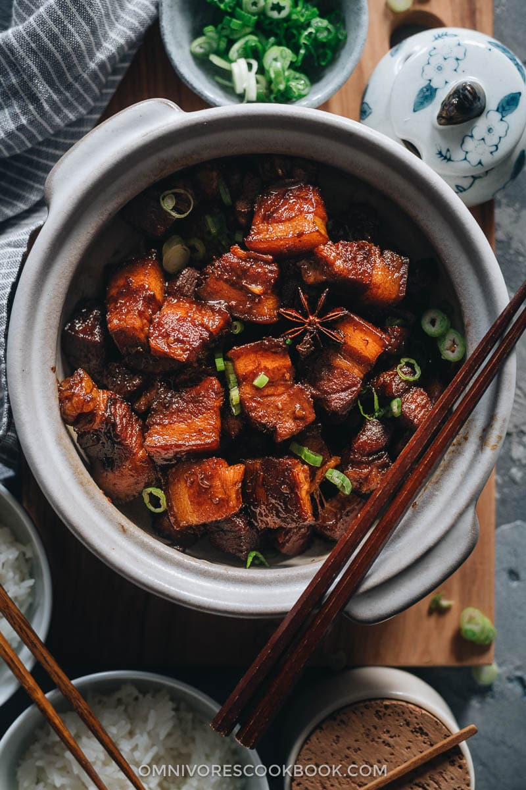

Hong Shao Rou

Description
Aromatic stewed pork in a thick spicy-sweet sauce.
Ingredients
- 80ml of chinese cooking wine SHAO XING
- 50ml of light soy sauce
- 100g of crushed palm sugar
- 4 crushed gloves of garlic
- 1 chopped chilli pepper
- 4 spring onions
- 1 cinnamon
- 2 star anise
- 1 medium size thick cut ginger
- 800mg thick cut pork
Steps
- Throw pork into a boiling water.
- Boil for 2 minutes.
- Rinse pork.
- Heat a frying pan and throw palm sugar on it.
- Wait until the sugar changes color to dark brown.
- Put the pork in a pan and stir until the meat is covered with caramel.
- Put garlic, chili, onions, cinnamon, and ginger in a pan.
- Pour soy sauce and wine.
- Cook for 10 minutes.
- After 10 minutes of cooking on the pan, replace the pan with a saucepan and put everything into it.
- Refill the saucepan with water and stew everything for 40 minutes.
- After 40 minutes, put down the cover of the saucepan and fry meat while stirring - do it until the sauce thickens.
- Serve it immediately with rice, or wait until tomorrow.